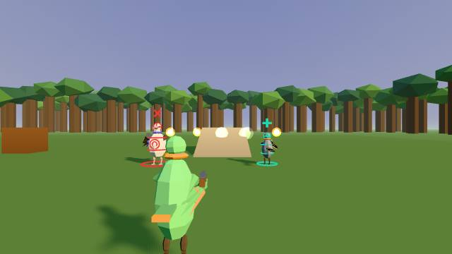
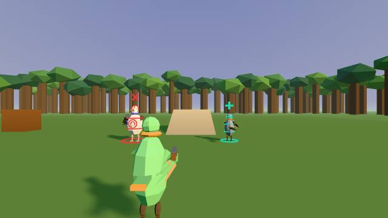
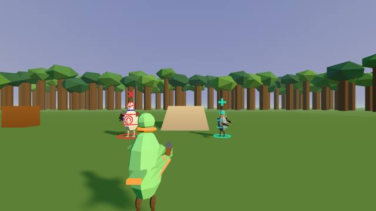
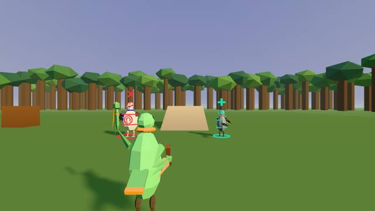

Peacock Playable
Song burst · Playable since Stage 4
Appearance: long blue neck with a crown of five spoon-tipped crest feathers; a long green train that trails on the ground and fans up into a huge eye-spotted disc (3 m across) whenever it casts. Iridescent blue and green with gold eyespots. Reads as "long train behind; giant fan when casting".
How to play
Song-burst birds deal their damage through abilities. Spend Seeds on the Song column, line up your abilities so they land together, and keep your cooldowns rolling rather than hoarding them.
Peacock fights with the Plume Darts, which fires travelling projectiles you have to lead. Damage drops off between 15 m and 35 m, and head hits are beak shots worth ×1.65. Every level above 1 is a Molt: +31 max HP per level; +3% gun damage of base per level; +1 Song power per level; +3 melee damage per level.
Abilities
Four abilities. Slots 1 to 3 unlock at level 1, the ultimate at level 6. Each can be upgraded three times, for 1, 2, 5 AP, in order; see Ability Points. The shortest cooldown in the kit is Hundred Eyes at 12 s.

1. Hundred Eyes
Fire 5 eye-darts in a 30-degree fan (60 m/s, 35 m). Each deals 45 + 0.45 x SP Song damage; a hero can be hit by at most 3.
- Tier 1 · 1 AP+1 dart (6 darts) darts +1
- Tier 2 · 2 AP-3 s cooldown cooldown -3 s
- Tier 3 · 5 APDarts reveal for 4 s and shred 10% Song resist for 6 s mark +1

2. Dazzle
The fan flashes in a 70-degree cone, 10 m long: enemies take 70 + 0.7 x SP Song damage and are disarmed for 1.25 s.
- Tier 1 · 1 AP+4 m range (14 m) range +4 m, length +4
- Tier 2 · 2 APDisarm +0.5 s (1.75 s) disarm +0.5
- Tier 3 · 5 APAlso silences for 1 s

3. Strut
For 3 s you move 30% faster, and your next ability cast in that time deals +25% damage.
- Tier 1 · 1 AP+1 s duration (4 s) duration +1
- Tier 2 · 2 AP-4 s cooldown cooldown -4 s
- Tier 3 · 5 APAlso grants a Song shield of 100 + 1.0 x SP for 3 s

4. Full Display
Rooted for 1 s while the fan opens, then every enemy within 18 m in your front 180 degrees takes 300 + 2.0 x SP Song damage and is revealed for 6 s.
- Tier 1 · 1 AP+5 m range (23 m) range +5 m, length +5
- Tier 2 · 2 APAlso stuns for 1 s
- Tier 3 · 5 AP-30 s cooldown cooldown -30 s
Since Stage 4. See all heroes.